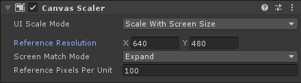
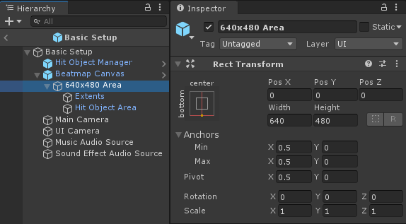
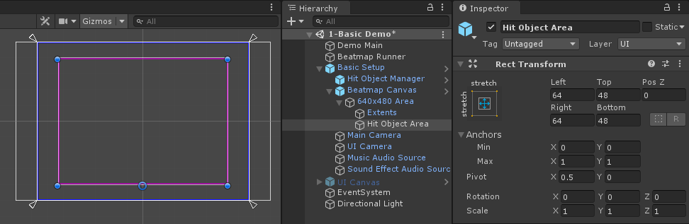
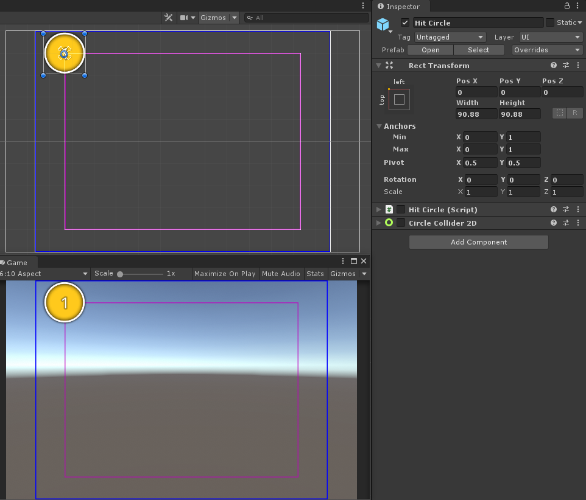
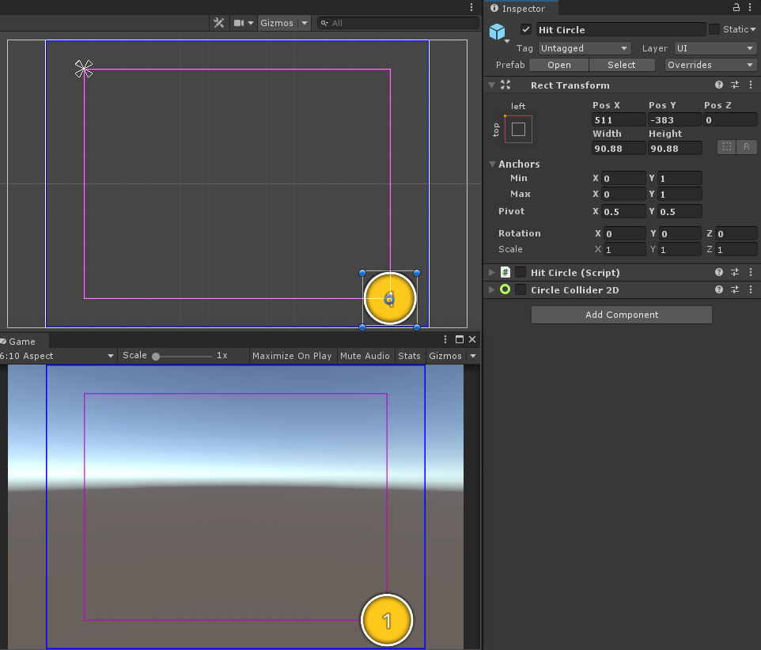

Beatmap Canvas
MouseDance uses the Unity UI to render the Hit Objects (instead of the sprite system). This is so it can take advantage of the Canvas Scaler, so that we can translate Osu!pixels to Unity properly, no matter the screen resolution or aspect ratio.
The reason for this is because Osu! is played on a 4:3 area, traditionally in 640x480 screen resolution. Even modern-day Osu! still uses a 4:3 area, it is just automatically enlarged to fit your screen.
So when you make an .osu file, all the x and y positions of Hit Objects are within a 640x480 area.
We can make this system work easily with Unity by having the Canvas Scaler's Reference Resolution set to 640x480. That way, the position of Hit Object prefabs can be assigned with Osu!pixel values as-is, without worrying about the user's current screen resolution.

Note
This Reference Resolution is already prepared for you in the demo scenes, so you should use those as a starting point. This page is not a step-by-step instruction, it is only meant to help explain the rationale behind why the UI Canvas is set up the way it is.
In the screenshots below, the blue box represents the Beatmap Area in varying screen sizes. This is that 640x480 that has been enlarged to fit the screen and centered, regardless if the user is playing in widescreen or ultra-widescreen. That means Hit Objects will only show up inside the blue box.
When in portrait mode (i.e. mobile), the Beatmap Area has been set up so that it is anchored to the bottom. The rationale behind this being that when the user is holding a phone, it's easier for their fingers to reach the bottom portion of the screen. But you can change the anchoring of the RectTransform to whatever you want.

Beatmap Area Adjuster
You can optionally assign a different offset from the bottom of the screen depending on the specific aspect ratio using the BeatmapAreaAdjuster. In the screenshots below, the 3rd screen (1080x1920, with 9:16 aspect ratio) is given a higher offset than the rest.
Hit Object Area
Hit Objects are actually placed inside a smaller enclosed area inside that 640x480, where it is smaller by 10% on all sides.

That means despite the fact that it's a 640x480 area, the furthest you can place a Hit Object in the Osu! Beatmap Editor is (511, 383) (note: not (512, 384) because position values start at 0). This ensures that no part of the Hit Object is ever partially off-screen.
That also means that a Hit Object with x and y values at (0, 0) is really positioned at (64, 48) in the 640x480 area. Note that the position x and y is the center of the Hit Object.
At the largest Circle Size setting allowed by the Osu! Beatmap Editor, a Hit Circle positioned at (0, 0) is just barely touching the top of the screen, so it isn't allowed to go any further.

Same goes for a Hit Circle positioned at (511, 383), it is touching the bottom edge of the screen, and isn't allowed to go further below. (Note that the Unity Inspector will show the Pos Y at -383 because of how the Unity UI anchoring system works, we require the Y position to be negative.)
